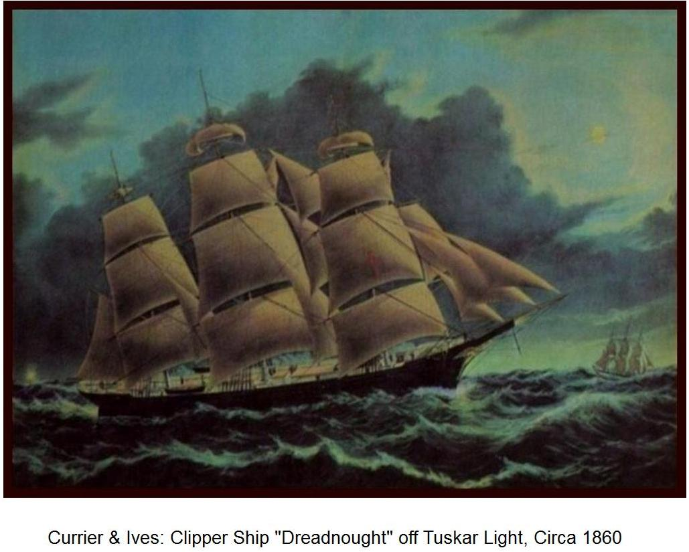

Thomas Murnahan
about 1831 – after 1886
Quick Facts
Immediate Family
Parents
Unknown UNPROVEDNo parent couple is named in any record held. The Knocklong/Grange Murnane hypothesis names a parish, not parents. A background search for the parents is still open.
Spouse
Mary Reddenbough (born Ireland, date unknown), married in Ireland (no record) SUPPORTEDNamed together as the parents of Mary T. Murnahan on her Ohio death certificate. No marriage record found in Ireland or Ohio.
Children
Mary T. Murnahan (born 1 December 1861, Ireland; died 19 January 1923, Cincinnati; married (1) William Green, (2) John W. Williams 29 July 1886) SUPPORTEDMary T. is the one proved child. Her parentage rests on her Ohio death certificate (informant unidentified). With William Green she had Julia (1873), Ellen (1875), Mary Ida (1878–1967; her death 6 June 1967, Cincinnati, verified — FamilySearch GWG9-4Z5), and William (1879–1880); the Green marriage, about 1873, is a tree lead, never verified. Her marriage to John W. Williams, 29 July 1886, as “Mary Collins” — the parish register entry was viewed per the research folder; no civil index entry has been located.
On Family Tree Sites
Life Timeline
about 1831 · age 0
Born, Ireland UNPROVED (age 26 on the 1857 arrival index; no birth record; Knocklong/Grange Murnane hypothesis unproved)
30 October 1857 · age about 26
Arrived Philadelphia on the Eva SUPPORTED (M334 card image read: Thos Murnane, 26, male, Ireland; FS ARK KDR3-V3Q; card image ark 33S7-95VG-5KC, image 5102 of 5,984)
1861–1862
Wagon maker listed at 79 E. 8th UNPROVED (ambiguous — the elder namesake’s address since 1842; both men were in Cincinnati; do not present as proof our Thomas was there by 1861)
1 December 1861
Daughter Mary born in Ireland DOCUMENTED (Ohio death certificate)
1868–1886
Blacksmith SUPPORTED (71 Hunt, then 398 Broadway, then 522 Main; Cincinnati directories; the identity is a strong lead, not proof, until a census household ties the blacksmith to daughter Mary)
after 1886
Last seen; death unknown UNPROVED
Life Story
Thomas Murnahan is known from exactly one record: his daughter Mary T. Murnahan’s Ohio death certificate, which names her father Thomas Murnahan, born in Ireland, and her mother Mary Reddenbough, born in Ireland. Nothing else names him as her father, and no birth, marriage, death, or burial record has been found for Thomas himself. He was born about 1831 in Ireland — the year comes only from his age, 26, on the 1857 arrival index — and he reached America on 30 October 1857, landing at Philadelphia on the Eva, a Thos Murnane of 26 in the M334 index, the card image read. No portrait of Thomas has been found.

In Cincinnati he worked the horse trades — wagon maker, then blacksmith — as the city directories trace from 1861 to 1886. The trail needs care: an older Thomas Murnahan, a wagon maker at 79 E. 8th since 1842, worked the same streets, and the 1861–62 entries at that address may be his, not ours — the elder had an Ohio-born wife and Ohio-born sons from 1842, and cannot be the father of a girl born in Ireland in 1861 to two Ireland-born parents. The blacksmith’s trail that can safely be called ours starts in 1868, at 71 Hunt, and runs through 398 Broadway to 522 Main in 1881; the directory index runs to 1886. Whether the blacksmith at 522 Main is the father of Mary T. is a strong lead, not proof — the 1880 census household at that address, which would settle it, has not been located. A Kate Murnahan listed at 522 Main in 1881 may be a daughter or a sister; nothing proves the kinship.
His wife Mary and their daughter crossed after him, in 1862–1873, and the family settled in Cincinnati, where daughter Mary married twice — first William Green, then, in 1886, John W. Williams. Thomas’s own end is unknown: no death or burial record has been found, he is not in the St. Joseph New Cemetery database, and no military service has been found for him. His parents are unknown, and the search for them is still open.
Sources and Evidence
- Ohio death certificate, Mary T. Murnahan (Williams), Reg. Dist. 227, File No. 422: names father Thomas Murnahan (born Ireland) and mother Mary Reddenbough (born Ireland) SUPPORTED (parentage — informant unidentified; FS ARK X8TF-45S; Ohio Deaths 1908–1953, image 394 of 3,312; daughter born 1 December 1861, Ireland; died 19 January 1923, Cincinnati; buried Spring Grove, 20 January 1923, Section 15, Grave 232)
- M334 Supplemental Index + card image, FS film 128: Thos Murnane, 26, male, Ireland, destination U.S., port of entry Philadelphia, vessel Eva, 30 October 1857 SUPPORTED (FS ARK KDR3-V3Q; card image ark 33S7-95VG-5KC, image 5102 of 5,984; index read + card image read)
- Cincinnati city directories 1861, 1862, 1868, 1877, 1881 + CHPL full-text index to 1886 SUPPORTED (wagon maker, then blacksmith — 71 Hunt, 398 Broadway, 522 Main; the 1861–62 entries at 79 E. 8th are ambiguous, the elder namesake’s address; the identity of the blacksmith as Mary’s father is a strong lead, not proof)
- United States censuses 1850 (9th Ward) and 1860 (13th Ward, as “Monaghen”), Cincinnati: the elder Thomas Murnahan, wagon maker, born Ireland, wife Mary born Ohio, sons John, Thomas F., Francis DOCUMENTED (proves the elder is NOT Mary’s father — a man with an Ohio-born wife and Ohio-born sons from 1842 cannot be the father of a girl born in Ireland in 1861 to two Ireland-born parents)
- Hamilton County marriage index (HCGS): Thomas × Mary Cannon, 3 April 1873, St. Francis Xavier DOCUMENTED (the record exists; the groom is Thomas F. Murnahan, son of the elder Thomas, born 1815 — FamilySearch 9SMK-Q4P × 9SMK-QHQ — NOT our Thomas)
- Geni profile, read live 6–7 November 2026: Thomas Murnahan, birth “estimated between 1796 and 1856” (a placeholder range), no dates, added 27 September 2026, Matches 0 SUPPORTED (About, updated 23 October 2026, states the couple is known from the 1923 death certificate and no marriage record was found in Ireland or Ohio)
- FamilySearch PNR9-B71, read live 6–7 November 2026: no birth, christening, or death dates; Sources 0; Memories 0; no marriage events; Possible Duplicates 0 SUPPORTED
- Ancestry, Brewster Family Tree (tree 212654536), person 162810164349, read live 6–7 November 2026: Birth/Death Unknown; timeline only the daughter’s birth (1 December 1861, Ireland) and death (19 January 1923, Cincinnati); Sources none; no marriage fact at all — the “m. Maria Cahil 14 Feb 1827” marriage is NOT on the live profile SUPPORTED
- NLI Knocklong & Glenbrohane parish 0265, film 02509/07, Baptisms p. 35 (November 1861–February 1862), read in full: NO Mary/Murnahan baptism; no 1–12 December entries at all (30 November jumps to 13 December) SUPPORTED (genuine negative — the premise that Mary’s December 1861 baptism is in this film is not confirmed)
- University of Cincinnati Birth & Death Records, “Murnahan” (13 results): the Thomas death 25 December 1865 is a 5-year-old child, NOT ours; no 1878 Thomas death record SUPPORTED (negative for our Thomas)
- St. Joseph New Cemetery database, “Murnahan” (11 of 11): no Thomas or Mary of ours buried there SUPPORTED (negative)
- Tricia’s Ancestry tree (“Tricia’s Shamblen/McKinney Family Tree”, tree 44342901), searched signed in 6–7 November 2026: the couple is NOT in the tree SUPPORTED (genuine negative; Brewster-side couple, nothing to harvest)
- WikiTree — no profile for either spouse, a genuine negative, no tile; Findmypast — Thomas 27 results, none ours, no tile; Find a Grave — memorial 129421713 (died 15 March 1878, St. Joseph New) is a 3-year-9-month child of Francis & Catharine, NOT our Thomas, no tile SUPPORTED
Grades: DOCUMENTED an original record says it · SUPPORTED several records point to it · FAMILY ACCOUNT the family’s own telling · UNPROVED a lead, not proved.
Research Notes and Open Questions
- Grades on this page: DOCUMENTED means an original record was read; SUPPORTED means a claim attested by filed research — the directory runs, the cemetery database, the signed-in tree checks — but not by a register read here; UNPROVED means a claim carried from the research folder with no corroboration found.
- Parentage: Thomas’s parents are unknown — no named parent couple in any record held; neither clears 60%. The Knocklong/Grange Murnane hypothesis names a parish, not parents. A background search for the parents is still open.
- The elder namesake: the elder Thomas Murnahan (wagon maker at 79 E. 8th, 1840–1862; Ohio-born wife Mary; Ohio-born sons from 1842) is NOT Mary’s father — the 1850 and 1860 censuses prove it. He is very plausibly the man our Thomas came to join. The 1861/1862 directory entries at 79 E. 8th sit at the elder’s address and are AMBIGUOUS — do not present them as proof our Thomas was in Cincinnati by 1861. The Eva 1857 index is the arrival evidence; the directory trail safely attributable to our Thomas starts 1868.
- Hanging Rock: the couple’s document says Thomas “worked the Hanging Rock iron furnaces (collier/woodchopper), Lawrence Co., Ohio” — NO record behind it anywhere in the folder, and no Murnahan furnace worker surfaced in free sources. The pages carry the directory-verified Cincinnati trade instead. The Lawrence County Murnahans are a different family (no Thomas in Windsor Township in 1850; no Murnahan × Redenbaugh marriage in Lawrence County Books 1–3, 1817–1843).
- The “m. Maria Cahil 14 Feb 1827” marriage is NOT ours: Thomas Marnane × Maria Cahil, Fedamore/Manister, County Limerick — that family emigrated to Becket, Massachusetts. It is NOT on Thomas’s live Ancestry profile and is not carried here.
- The 1873 Thomas × Mary Cannon marriage (St. Francis Xavier, 3 April 1873) is Thomas F. Murnahan, son of the elder Thomas (born 1815) — FamilySearch 9SMK-Q4P × 9SMK-QHQ — not our Thomas. The 1875 Martha × Tomey entry was not read.
- The “Murnahan Mary, widow” directory entries (1877, 1881) cannot be Thomas’s wife — he appears alive in the same volumes. She may be the elder namesake’s widow, unproved.
- The 1900 census household indexed as “Mary Murnahan, 79, female” is Maurice Murnahan, male, born October 1821, widowed, blacksmith, born Ohio, father born Germany, mother born Ohio; son Thomas born July 1842. An index misreading — not our Mary, and both Ohio-born.
- Ship image: the packet ship Dreadnought (Currier & Ives, circa 1860) is shown above — a period-typical sailing packet of the late 1850s, NOT Thomas’s ship. His arrival is indexed as the Eva, Philadelphia, 30 October 1857; no image of the Eva has been found in any free source. The manifest’s original caption said “his ship is unknown” — updated here because the Eva is now named. The McTaggart typical-emigrant-ship image is superseded by the Dreadnought and is not placed. Place photos stay out.
- Kirkham Bible record: the Family Bible Preservation Project index lists a “MURNAHAN FAMILY BIBLE RECORD” in E. Kay Kirkham, An Index to Some of the Bibles… Vol. 2 — Central States (FS catalog 460558). The digital version, item 301790, image 237, reads only “Murnahan-OH-859,776-8” — an index POINTER, not the record. The record itself is on DAR microfilm 859,776, item 8, and was NOT read. Do not present the Bible record as read.
- NLI Knocklong & Glenbrohane: film 02509/07 Baptisms p. 35 read in full — no Mary/Murnahan baptism, no 1–12 December entries. Film 02509/11 Marriages pp. 9–10: no Thomas × Mary marriage (February 1860–March 1862); pages 1854–February 1860 NOT read — incomplete, not “not found”.
- Daughter Mary’s marriages: William Green, about 1873, is a tree lead, never verified (the 1873 marriage would make her 11–12 — the year is the likeliest error). John W. Williams, 29 July 1886, as “Mary Collins” — the parish register entry was viewed per the research folder; no civil index entry has been located. “Collins” and the “T” initial are both unexplained. Jeremiah Collins × Ellen Hurley as her parents is CONTRADICTED by the death certificate.
- No lore: no family tale, anecdote, or oral history is attached to Thomas, Mary, or any of their circle (09-29/30 lore sweep). The chapter draft “The Wagonmaker and the Palatine” was audited 2 October 2026, BEFORE the 21 October elder-namesake verdict — it may carry the elder’s 1842–1862 trail as our Thomas’s and was not used as a fact source.
- Paid items (notes only, never purchased): SFX register entries 1873 + 1875 — paid/archival route parked, HCGS volunteers the free alternative (the 1873 entry is marked “NEEDS USER APPROVAL” since 22 October — not requested); Archdiocese archive copies, $25 (Herbert & Ross full index entries); “The Bouncers” parish history, €120; HCGS full Herbert & Ross indexes — purchase, or free at Cincinnati Public Library branches.
- Military: no service found; the 1863–65 draft lists are unsearched; a St. Joseph New Cemetery GAR marker would settle it.
- Open: the 1880 census household at 522 Main (Kate question) + 1870 Cincinnati wards reels 1210–1218 page-through; Hamilton County Catholic marriages Monahan/Murnaghan 1845–1870 (HCGS free PDFs, pending); HCGS 1886 Williams × Murnahan index check; Catholic Telegraph full-text archive (2,726 issues, 1831–1885); Probate Court death records 1881–1908 vols 1–4 M section; Probate marriage license index 1863–1884 G section (Green × Murnahan ~1873) + 1884–1890 (1886 Williams × Collins); Hamilton County deeds/mortgages 1856–1870 details (found by FS full-text search, not yet retrieved); Spring Grove burial searches (William Green d. 1885; Thomas/Mary Murnahan; Mary T. Williams burial-card PDF); 1885–1887 directories (“Green Mary wid William”); Statue of Liberty–Ellis Island Foundation DB (free registration, login-gated); MyHeritage profiles (ind=1500023 / ind=1500024, verified 2 October 2026, NOT re-verified live — no tiles).
- Tree checks, signed in 6–7 November 2026: Geni (0 sources; placeholder birth range); FamilySearch (PNR9-B71; Sources 0); Ancestry (162810164349; no sources; no marriage fact); WikiTree — no profile, genuine negative, no tile; Find a Grave — the 1878 memorial is a child, not our Thomas, no tile; Findmypast — 27 results, none ours, no tile; Tricia’s Ancestry tree — absent; MyHeritage — not re-verified live, no tile.
Profile history: Created 4 November 2026 from the family couple profile and research notes.